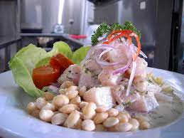

Pagina principal
Ceviche

Un rico ceviche del Norte
Ingredientes
Pescado fresco
Aji limo
Sarandaja
Camote
Preparacion
Picar el pescado
Sancochar el camote y la sarandaja
Agregar Limon, aji y sal al gusto